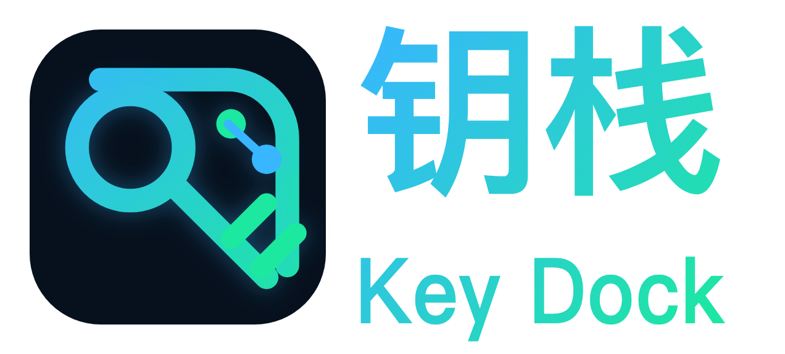
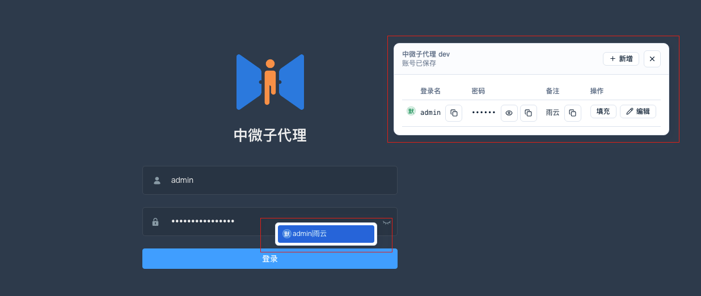
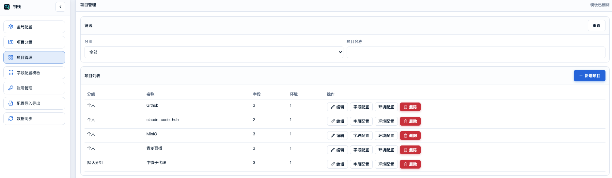
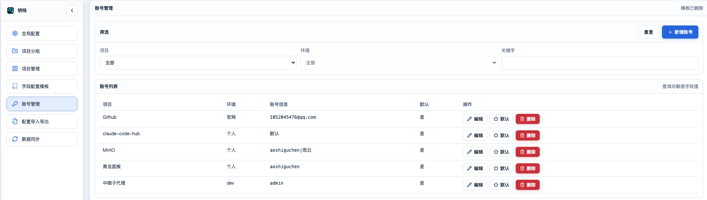
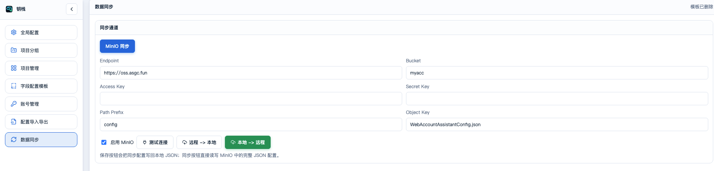

别再在登录页翻账号了：钥栈 KeyDock 第一次公开介绍

登录页最烦的地方，通常不是登录本身。
是你明明知道系统在哪，却想不起这个环境该用哪组账号；刚从群公告里翻出测试账号，下一分钟又要切到预发；本地调试时还要区分不同角色，管理员、运营、审核员、普通用户，一套页面来回试。
复制。
粘贴。
再复制。
再粘贴。
这类活不难，但很打断思路。
钥栈 KeyDock 就是为这种工作现场写的。它不是一个大的平台，也不是密码保险箱，而是一款 Chrome 插件：把你散落在各个系统、各套环境里的账号“钥匙”统一停靠，需要时随手取用。
打开登录页，它自己认项目和环境
KeyDock 的使用方式很直接。
你先在管理面板里配置项目、环境和账号。之后打开对应登录页，插件会按 host 和 path 关键字识别当前页面，命中后才弹出账号浮窗。
也就是说，它不会在所有网页上刷存在感。只有你配置过的系统和路径，才会出现对应账号。

登录页浮窗和输入框账号选择器：命中环境后展示对应账号，一键填充或复制。
如果某个账号经常用，可以标记成默认账号。下次打开匹配页面时，它可以自动填好。
如果你不想自动填，也可以点一下账号行手动填充；敏感字段默认隐藏，需要看时临时显示，过一会儿自动恢复。
它管的不只是账号和密码
很多内部系统的登录字段并不标准。
有的叫 username，有的叫 loginName，有的还要租户、机构、区域、角色、验证码旁路字段。只做“账号 + 密码”的工具，在这种系统里很快就不够用。
KeyDock 的字段是可以自定义的。字段可以设置成输入型或展示型，也可以标记是否敏感、是否必填、是否可复制。
这点对企业内部系统很实用：你可以按项目建不同字段模型，而不是硬把所有账号塞进同一种格式里。

项目管理：按项目、分组、环境组织账号配置。
账号多了，也得能找得到
一个人维护三五个系统时，随便记一下还能撑住。
系统变成十几个，环境变成几十套，再加上不同角色账号，靠脑子记就开始不靠谱了。
KeyDock 把配置管理拆成几块：全局配置、项目分组、项目管理、字段配置模板、账号管理、配置导入导出、数据同步。
平时用得最多的是项目管理和账号管理。项目负责告诉插件“什么页面算这个环境”，账号负责告诉插件“命中后有哪些钥匙可以用”。

账号管理：不同项目、不同环境、不同角色账号集中维护。
| 工作里的麻烦 | KeyDock 的处理方式 |
|---|---|
| 多套环境账号混在一起 | 按项目、分组、环境拆开管理 |
| 登录页字段不统一 | 自定义字段模型和填充选择器 |
| 重复复制账号密码 | 一键填充、一键复制、默认账号自动填充 |
| 换设备后配置难迁移 | 完整 JSON 导入导出，可选 MinIO 同步 |
不想上服务端，也能完整使用
KeyDock 默认使用 Chrome 本地存储，不需要你先部署一套后端服务。
这对个人开发者、小团队、内部工具维护者比较友好：装上插件，本地配置好项目和账号，就能开始用。
如果你确实需要多端同步，也可以接入 MinIO。同步是可选能力，不启用就不外联，数据只留在当前浏览器。

数据同步：可选接入 MinIO，多端共享同一份配置。
安全边界要说清楚
这句很重要。
KeyDock 不是加密保险箱。
它的定位是多环境登录助手。当前版本里，本地配置、导出 JSON、云端配置以及 MinIO 连接信息都按明文存储；敏感字段会默认隐藏，但这不等于加密保护。
所以它适合管理开发、测试、预发、内部演示等场景下的账号辅助信息。不要在公共电脑、不受信设备，或者对安全要求极高的场景里保存高敏感账号。
工具要好用，也要知道边界在哪里。
这次不是版本日志，是第一次正式打招呼
KeyDock 当前公开版本是 v1.0.1。
不过这篇文章不是为了列 v1.0.1 的几条变更。更准确地说，这是 KeyDock 第一次对外做完整介绍：它为什么存在，适合谁用，怎么使用，以及哪些事情它不会替你兜底。
如果你常年维护多套 Web 系统环境，经常要在登录页切角色、切账号、切环境，可以先装上试一轮。
先配置一个项目。
先放两三组测试账号。
打开登录页看它能不能少打断你一次。
资料入口
Chrome 应用商店：钥栈 KeyDock 商店详情页
GitHub 仓库：https://github.com/aoshiguchen/key-dock
Gitee 仓库：https://gitee.com/asgc/key-dock
作者微信：yuyunshize（备注“钥栈”更易通过）